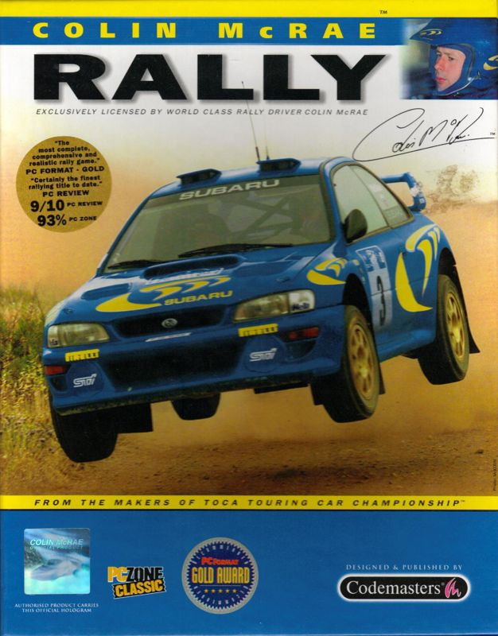

Play date: 1998
Developer: Codemasters
Publisher: Codemasters
Memo: 3dfx
Description: From the makers of Touring Car Championship comes Colin McRae Rally, a rally title hoping to knock V-Rally over.Codemasters has included an collection of fifty two tracks set over five countries including Greece, United Kingdom, Sweden and Australia. Colin McRae Rally also offers a selection of eight Rally vehicles with 4WD and 2WD vehicles. The game also offers a number of game modes including Championship, Rally, Time Trial, Rally School (learn the ropes from Colin McRae himself) and a two player mode.